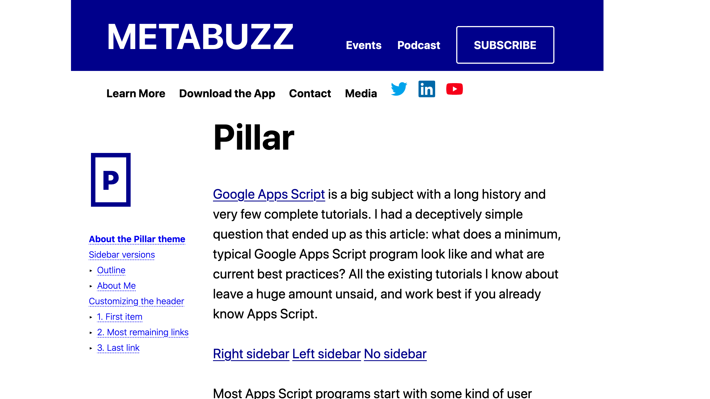
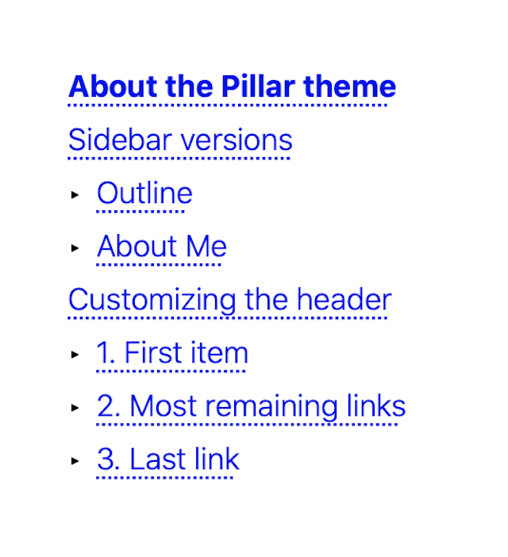

Pillar is the basis of about half of the Metabuzz themes. It gets its name from that fact that it stands in a column in the middle of the page, with gaps on the right and left sides.
This differs from the Default theme, which is the basis of most other Metabuzz themes. Default has a header and footer that stretch to the ends of the page. Pillar themes reduce distraction because they tend to be less information dense, making it easier to focus on the article text. The default themes leave more room on the page for multiple kinds of content.
Two shots
-  Here's some useful text
-
And more useful text
Getting the most out of the reference theme
Pillar is mean to be a general-purpose theme with an eye toward clean design and a minimum of surprises, but it does have a few custom features:
How this theme uses sidebars
Test the reference with sidebars
Right sidebar Left sidebar No sidebar
3-level outline format for sidebars
Like the Reference theme, Pillar is
well suited for documentation. It employs a similar but not identical
way to show a table of contents in your document: by using unordered
lists to show up to 3 levels of outline. Your sidebar.md file
would look something like this:
* [About the Pillar theme](#Pillar)
+ [Sidebar versions](#sidebars)
- [Outline](#outline)
- [About Me](#about)
+ [Customizing the header](#customizing-header)
- [1. First item](#first-link)
- [2. Most remaining links](#most-links)
- [3. Last link](#last-link)
And the resulting sidebar links would appear like this:

Note
This special formatting of unordered lists is restricted to sidebars. Don't worry that bullet lists won't look the way you expect in the document.
Heavy box markdown for sidebars with strikeout syntax
Use a level 3 header within a sidebar (and no other part of the document) to get a heavy box surrounding the text. It looks great with just a single initial:
The markdown to accomplish that is ~~strikethrough~~ on a leavel 3 header, which normally
draws a line straight through the middle of the text, like this:
strikethrough
So, for example, you might want a sidebar that looks like this:
You'd put this markup into the sidebar:
~~P~~
* [About the Pillar theme](#Pillar)
+ [Sidebar versions](#sidebars)
- [Outline](#outline)
- [About Me](#about)
+ [Customizing the header](#customizing-header)
- [1. First item](#first-link)
- [2. Most remaining links](#most-links)
- [3. Last link](#last-link)